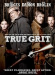
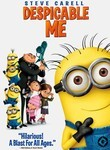
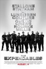

← 2010 →
Overall
Movie Cover Collage Released in 201028 Movies Top 10 series watched
|
Movies released in 2010
 True Grit (2010) Releases on 1969-12-31 Stephen Klancher: December 22, 2010 Totally fun to see The Dude as a cowboy, and the girl did well too.  Black Swan (2010) Releases on 2010-12-17 Stephen Klancher: December 20, 2010 That was crazy amazing. All I knew going in was there was ballet and it was supposed to be good. Totally surprising and totally insane... the qualities I like most in a movie. Tron: Legacy (2010) Releases on 2010-12-17 Stephen Klancher: December 17, 2010 Everything looked pretty and sounded cool. It didn't seem like the 3D stood out much. Justice League: Crisis on Two Earths (2010) Releases on 2010-02-23  Episode dated 11 November 2010 (2010) Releases on 2010-11-11 Stephen Klancher: November 23, 2010 Jon Stewart interview: http://www.msnbc.msn.com/id/26315908/vp/40141311#40141311  Despicable Me (2010) Stephen Klancher: November 19, 2010 My in-flight entertainment from Boston to Denver. Though I enjoyed some of the lines, like "First give me the moon!", it was not very memorable. Due Date (2010) Releases on 2010-11-05 The Rally to Restore Sanity and/or Fear (2010) Releases on 2010-10-30 The Social Network (2010) Releases on 2010-10-01 Stephen Klancher: October 2, 2010 A movie about Facebook could have been stupid... but this wasn't. It was well done and fun to watch.  The Town (2010) Stephen Klancher: October 1, 2010 Pretty good... I really liked Jeremy Renner as Jem. Also the florist. Cats & Dogs: The Revenge of Kitty Galore (2010) Stephen Klancher: September 26, 2010 My sister chose this when we were going to the $2 theater in Irvine. At the moment I see this is in the IMDb Bottom 100, but I don't think it deserves that. It wasn't a good movie but it seemed like most generic kids movies. It even had a Silence of the Lambs parody scene which was amusing. Seriously, I don't know what adult would have enough expectation of liking this that they would actually feel let down.  Machete (2010) Stephen Klancher: September 11, 2010 Watching Danny Trejo is ridiculously fun. Also Michelle Rodriguez > Jessica Alba Comedy Central Roast of David Hasselhoff (2010) Stephen Klancher: August 19, 2010 Pretty fun... I think Whitney Cummings and maybe Greg Giraldo stood out the most. Seth MacFarlane was also pretty good as host. Scott Pilgrim vs. The World (2010) Stephen Klancher: August 16, 2010 Ridiculously awesome. This is the style that comics and anime should take for live action film adaptations. The video game flavor to things was just pure joy. Whenever I end up really liking something I realize that sound has a lot to do with it. This movie used video game sounds and music throughout. There is absolutely a Pavlovian response as the movie uses many sounds from games that are tied to rewards... There was a fight where every hit had the sound of Sonic collecting rings. The humor was very fun, but the style of every part of this just tapped into the joy center of my brain.  The Expendables (2010) Stephen Klancher: August 15, 2010 Let Li was the most fun character to me. Especially the whole "I'm smaller" conversation. I knew Arnold was going to just be a cameo (and the President line was great), but I was hoping to see more Bruce Willis.  The Other Guys (2010) Stephen Klancher: August 6, 2010 Freakin hilarious. I expected good things from Will Ferrell, but Mark Wahlberg, Michael Keaton, and pretty much all the side characters were excellent in this too. So damn funny.  Dinner for Schmucks (2010)  Inception (2010) Releases on 2010-07-16 Stephen Klancher: July 17, 2010 Dreams within dreams... there was never a chance I wouldn't like this movie. It was incredibly fun.  How to Train Your Dragon (2010) Stephen Klancher: July 14, 2010 Fun and surprisingly funny at times. Watched with Justine on my awesome new laptop a few hours after I got it.  Kick-Ass (2010) Releases on 2010-04-16 Stephen Klancher: June 27, 2010 Totally fun movie! So many of the scenes in this movie were like the answer to "what's the coolest thing that could happen in this situation?" Good music though much of it as well.  Toy Story 3 (2010) Releases on 2010-06-18 Stephen Klancher: June 26, 2010 That was a great movie. The humor was excellent throughout and the 3D wasn't so much showy as it was just a natural part of a rendered movie.  MacGruber (2010) Alice in Wonderland (2010) Releases on 2010-03-05  Hot Tub Time Machine (2010) Stephen Klancher: March 29, 2010 Funny movie... Craig Robinson and Rob Cordry were great... Also, 80s music improves any movie.  Shutter Island (2010) Stephen Klancher: February 27, 2010 A lot of elements were over dramatized, like how the music in the beginning sounded like it should be at the climax of a movie... but I really enjoyed it. Later in the movie the sudden music went well with jarring scenes. Fun all around. |
Movie watching by month
![Progress Bar](data:image/png;base64,iVBORw0KGgoAAAANSUhEUgAAASwAAADICAIAAADdvUsCAAAACXBIWXMAAA7EAAAOxAGVKw4bAAAC
5UlEQVR4nO3dsU0DQRBAUUCOiAlcCC1QjyUquJ7O9ZzkCq4EExAQgnRr/cN+r4DR2vLXJKv18/V6
fdqfdV2XZdk+Z57naZq2z4HbeakPAI9OhBATIcRECDERQkyEEBMhxEQIMRFCTIQQO9QHuDk34BK+
9r+zCSEmQoiJEGIihJgIISZCiIkQYiKEmAghJkKIiRBiIoSYCCEmQoiJEGIihJgIISZCiIkQYiKE
mAghJkKIiRBiIoSYCCEmQoiJEGIihJgIISZCiIkQYiKEmAghJkKIiRBiIoSYCCEmQoiJEGIihJgI
ISZCiIkQYof6APCLdV2XZdk+Z57naZq2z/k28FQ2IcRECDERQkyEEBMhxEQIMRFCTIQQEyHERAgx
EUJMhBATIcRECDERQkyEEBMhxEQIMRFCTIQQEyHEDvt8yorEwB/D6XTaPudB2IQQEyHERAgxEUJM
hBATIcRECDERQkyEEBMhxPxJ6L/nrtl/ZxNCTIQQEyHERAgxEUJMhBATIcRECDERQkyEEBMhxEQI
MRFCTIQQEyHERAgxEUJMhBATIcRECDERQkyEEBv55OHdv7039gPe93fF39mEEBMhxEQIMRFCTIQQ
EyHERAgxEUJMhBATIcRECDERQkyEEBMhxEQIMRFCTIQQEyHERAgxEUJMhBAb+doa7Nw+HwS0CSEm
QoiJEGIihJgIISZCiIkQYiKEmAghJkKIubbGj8/P1+Pxbfuc8/njchk2auCfoA78gANPZRNCTIQQ
EyHERAgxEUJMhBATIcRECDERQkyEEDvs86bS3Y/a51Ws9/ftY8bb5wcceCqbEGIihJgIISZCiIkQ
YiKEmAghJkKIiRBiIoSY19Ya+7yKRcImhJgIISZCiIkQYiKEmAghJkKIiRBiIoSYCCEmQoiJEGIi
hJgIISZCiIkQYiKEmAghJkKIiRBiIoSYCCEmQoiJEGIihJgIISZCiIkQYiKEmAghJkKIiRBiIoTY
F+yNlbwqLpK/AAAAAElFTkSuQmCC)
Series watching by month
![Progress Bar](data:image/png;base64,iVBORw0KGgoAAAANSUhEUgAAASwAAADICAIAAADdvUsCAAAACXBIWXMAAA7EAAAOxAGVKw4bAAAD
VElEQVR4nO3dsU0bYRiAYSdCCkpBlYIxKKicOrNQIjHBTcEKDGAmYAZqFyhFOkvpoCFFpKRJQ+63
3rN5ngE+WUavvjvuzvfh9fV1Nchut9tut/PnbDabaZrmz4GD8LH+APDeiRBiIoSYCCEmQoiJEGIi
hJgIISZCiIkQYiKEmAghJkKIiRBiIoSYCCEmQoiJEGIihJgIISZCiIkQYiKEmAghJkKIiRBiIoSY
CCEmQoiJEGIihJgIISZCiIkQYiKEmAghJkKIiRBiIoSYCCEmQoiJEGIihJgIISZCiJ3sdrvtdjt/
0Gazub6+nj8H3hubEGIihJgIISZCiIkQYiKEmAghJkKIiRBiIoSYCCEmQoiJEGIihJgIISZCiIkQ
YiKEmAghJkKIiRBiIoSYCCEmQoiJEGIihJgIISZCiJ3UH+DfBr6mZpqm+XNgf2xCiIkQYic3N5/P
z7/MH3R//+3oX094dbW6uBgw5+Hh593d2YBBHAWbEGIihJgIIbbQSxSwD8u89GUTQkyEEBMhxEQI
MRFCTIQQG3mJwh1w7MPAuwVvbwfMGc4mhJgIISZCiIkQYiKEmAgh5ikK9mLg8wqr1TR/zpLZhBAT
IcRECDHnhPA/Bt5MZxNCTIQQW+jh6MAHMryKIjHwL7hezx+zaDYhxEQIMRFCbKHnhAMN/Ffy2Zm3
uDCeTQgxEULs+A9Hl8mrDhPLvHBiE0JMhBATIcScE/LXwDPV09NPAwa9DzYhxEQIMYejB88tQYfO
JoSYCCEmQog5J2TpXl6en55+zJ/z+Pj98vJy/pzfBn4qmxBiIoSYCCEmQoiJEGIihJgIISZCiIkQ
YiKEmAghJkKIiRBiIoSYCCEmQoiJEGKerD94Ax/xXq+/zp/DW9mEEBMhxEQIMRFCTIQQEyHEXKJ4
AxcD2AebEGIihJgIIXb854TLfJ3IMvmuEjYhxEQIMRFCTIQQEyHERAgxEUJMhBATIcRECDERQkyE
EBMhxEQIMRFCTIQQEyHERAgxEUJMhBA7/h96WiY/qcQfNiHERAgxEUJMhBATIcRECDERQkyEEBMh
xEQIMRFCTIQQEyHERAgxEUJMhBATIcRECDERQkyEEBMhxEQIMRFCTIQQEyHERAgxEUJMhBD7BQt/
nReR5jPXAAAAAElFTkSuQmCC) |